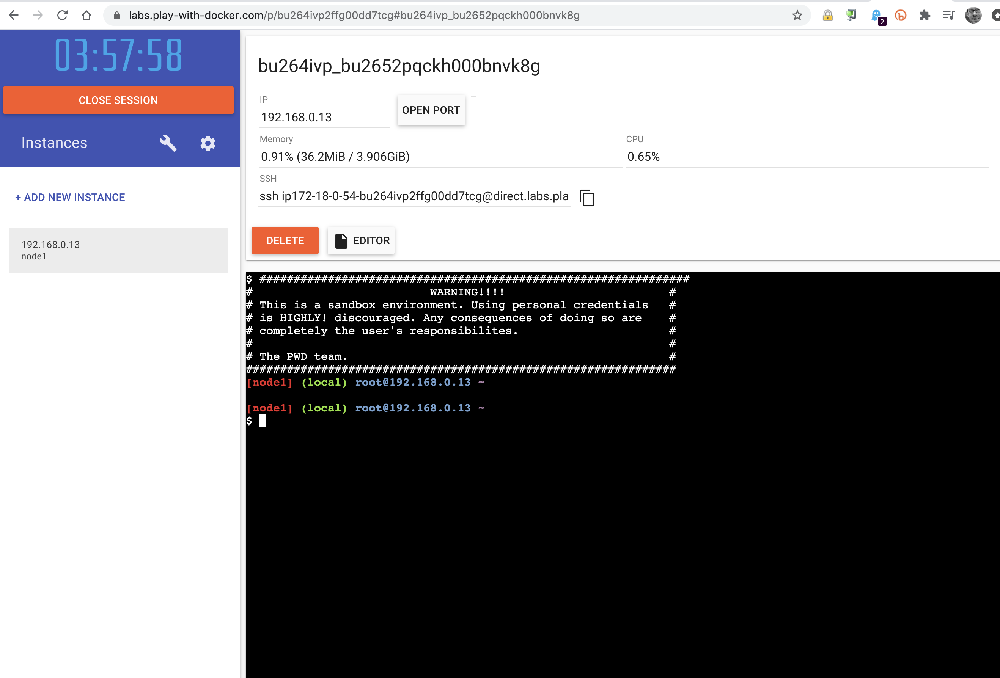
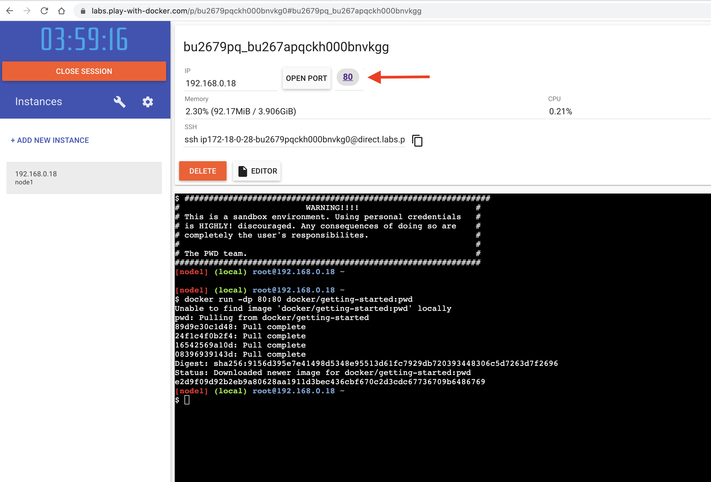
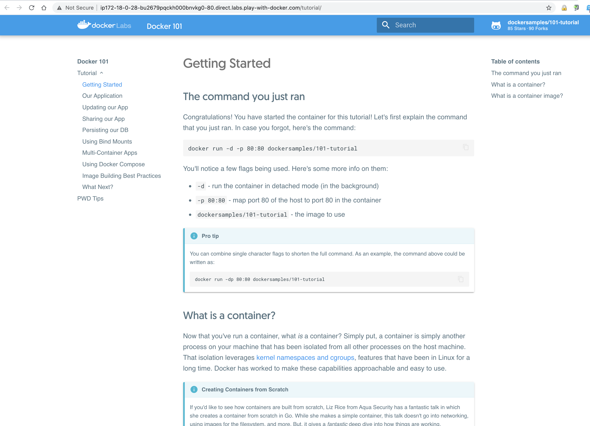

Containerized microservices are portable, efficient, and disposable, and contain code and any dependencies in a single package. Containerized microservices typically run a single process, rather than an entire stack within the same computing environment. This allows portions of your application to be easily replaced or scaled as needed.
Docker is the most popular, and one of the easiest, ways to work with containers. This lab introduces the basics of creating, using, and managing Docker containers.
This lab is unique in that you will be running Docker containers as a way of presenting and working through the lab itself. Setup instructions are below.
Open Play with Docker using the button below.
Click Login (and log into Docker) or Start.
You have now initiated a free 4-hour session. Click "ADD A NEW INSTANCE". Wait a few seconds for a terminal to appear. If your cursor does not appear automatically, press your RETURN button a time or two. Your browser window should look something like this:

To initiate the Docker 101 training modules, run this command in the terminal:
docker run -dp 80:80 docker/getting-started:pwd
This command launches the getting-started container, a portable training application.
To access the training modules, click on the hyperlinked "80" that appears near the top of the page:

The Docker 101 training pages should now appear in a new browser tab:

Carefully follow the instructions for the ten modules of the training.
When you have finished the training, click the red CLOSE SESSSION button. You may repeat this lab as often as you like.